昼
人形が語る、町の物語。
鷹、天皇、皇后、道風——各町に云われのある人形を乗せ、昼の祭りは華やかな装飾とともに進みます。
What is this?
下田八幡神社例大祭の太鼓台は、各町が誇る人形と提灯で彩られた山鉾です。 伝説や歴史を担い、太鼓の合図とともに町を練り歩きます。
昼
鷹、天皇、皇后、道風——各町に云われのある人形を乗せ、昼の祭りは華やかな装飾とともに進みます。
夜
夜は鮮やかな提灯が並び、太鼓の音が町内中に響き渡ります。昼とは異なる、幻想的な祭りの姿です。
Why you'll love it
中原町の鷹から大和区の素戔嗚尊まで、それぞれの太鼓台には独自のテーマと物語があります。 並べて見るほど、下田の祭り文化の深さが伝わってきます。
All fourteen
左右にスワイプしてご覧ください
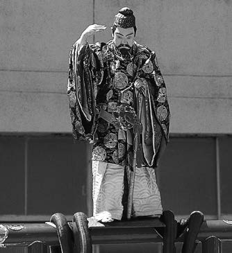
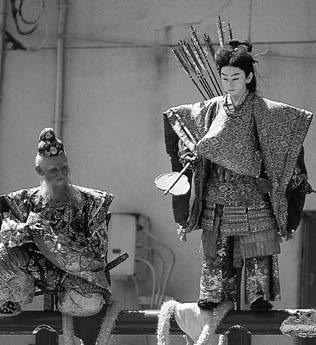
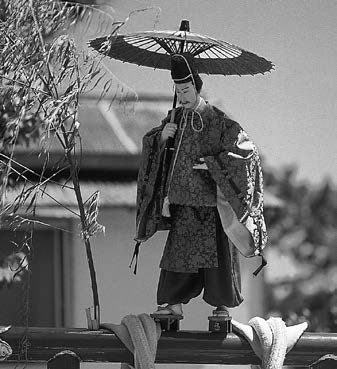
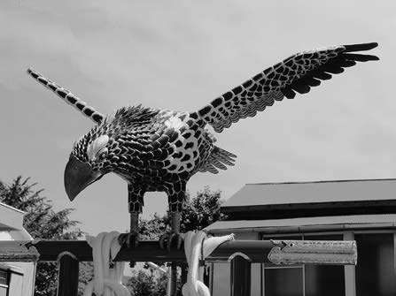
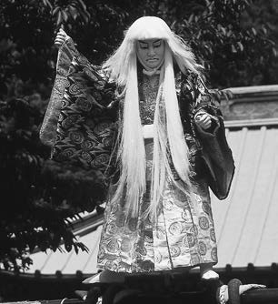
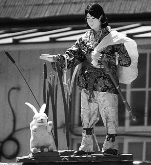
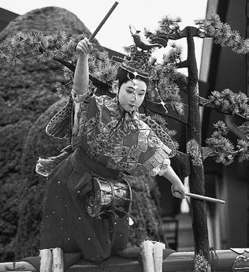
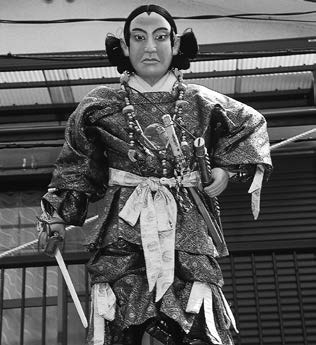
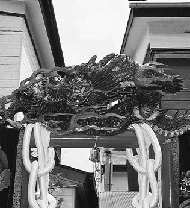
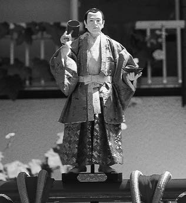
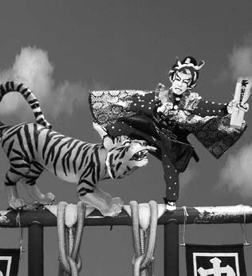
左右にスワイプして各太鼓台をご覧ください
Highlights
十四番すべてに物語があります。ここでは特に印象的な三つの太鼓台を、大きくご紹介します。
二町目の太鼓台は「協和」をテーマに、大国主命を乗せた荘厳な装飾が特徴です。 祭りの調和と連帯を象徴する、心に残る一番です。
Index
一番太鼓 — 鷹
中原町
二番太鼓 — 仁徳天皇
原町
三番太鼓 — 神功皇后
七軒町
四番太鼓 — 小野道風
彌治川町
五番太鼓 — 猿
大坂区 大工町
五番太鼓 — 鷲
坂下町
六番太鼓 — 連獅子
廣岡西
七番太鼓 — 連獅子
廣岡東
八番太鼓 — 大国主命と協和
二町目
九番太鼓 — 天の羽衣
三丁目
十番太鼓 — 鶏
池之町
十一番太鼓 — 和唐（藤）内と虎
伊勢町
十二番太鼓 — 龍
住吉区
十三番太鼓 — 猩々
新田町
十四番太鼓 — 素戔嗚尊
大和区